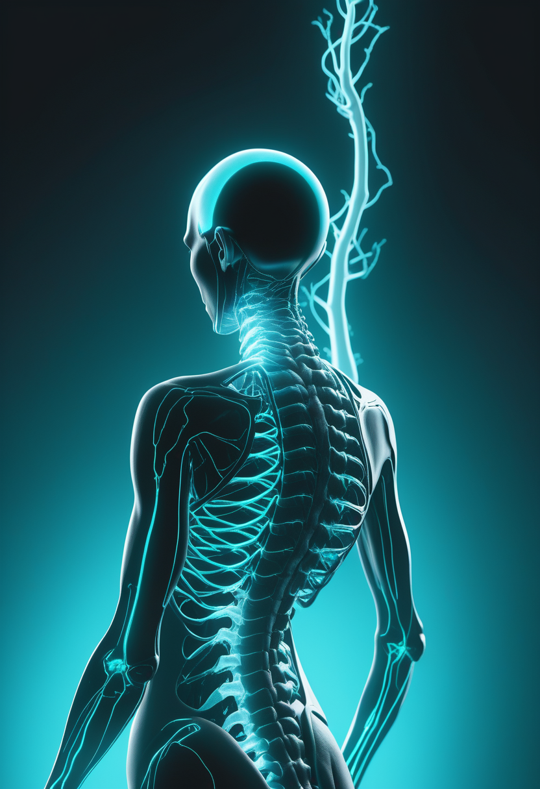
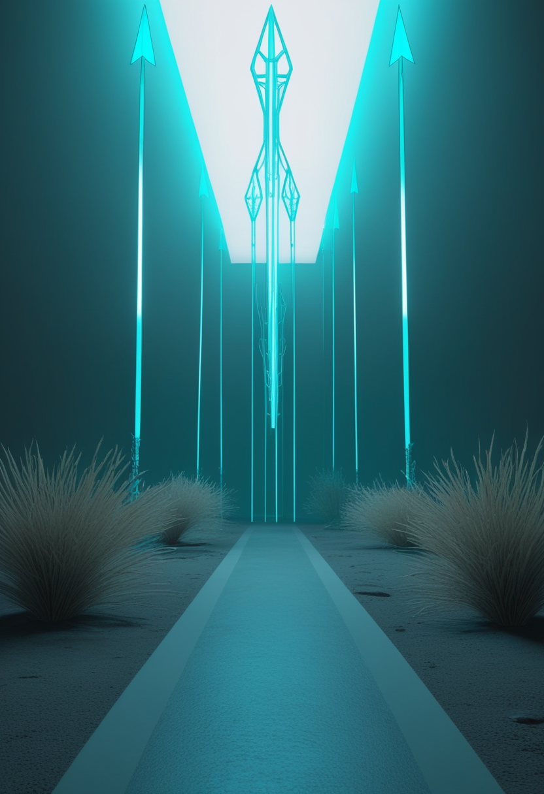
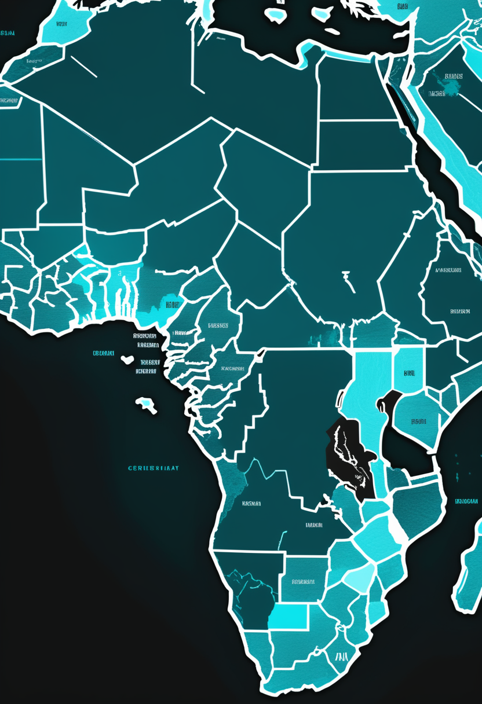
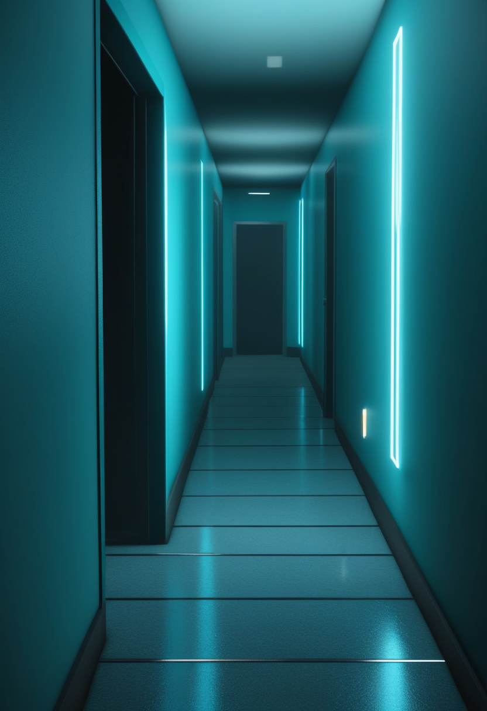
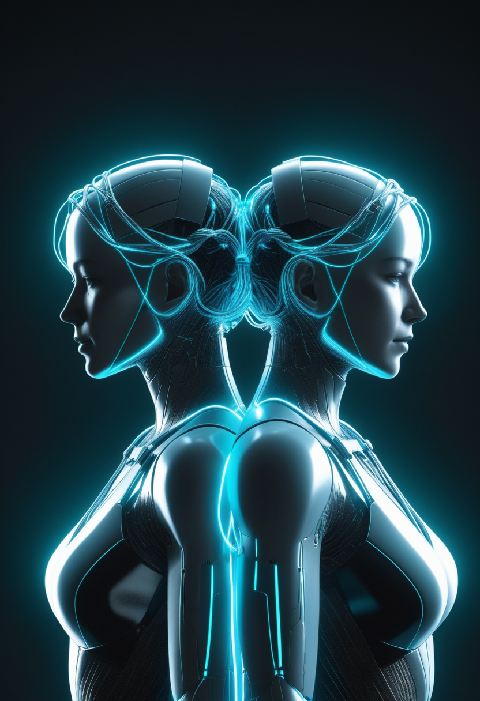
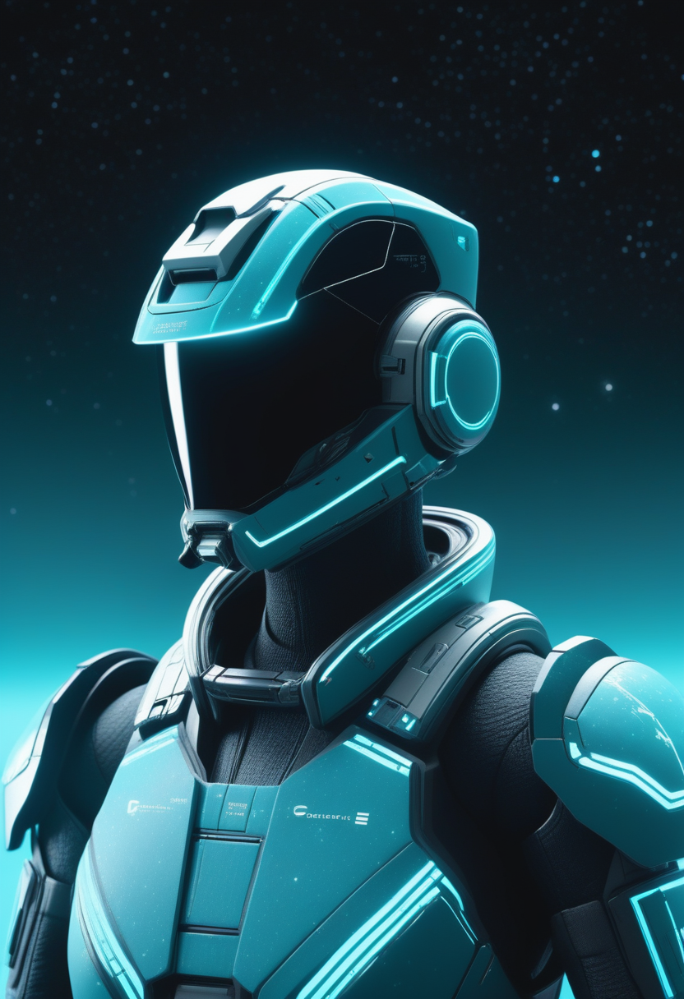
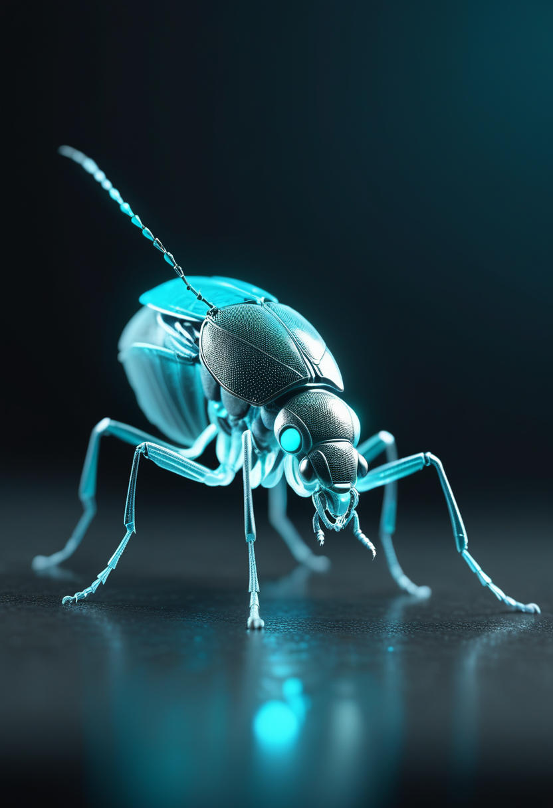

百万個に一個という極めて稀な崩壊が、五十年君臨してきた物理の地図から四シグマ外れた。発見まで残りわずか一シグマ。その傍らで、脳に光をともす電極が初の人体試験へ近づき、越境する病に大陸規模の連帯が応え、失われた筋肉を取り戻す三層の薬がそろいつつある。畏れることと、進むことが、静かに同時に進む一日。
CERNのLHCb実験が、2011〜2018年に記録した約6,500億個のB中間子崩壊データを解析し、「ペンギン崩壊」と呼ばれる100万個に1個の超希少な過程の測定値が、標準模型の理論予測から約4σ外れることを確認した(phys.org 2026年4月・ScienceDaily 5月26日)。この崩壊は、加速器で直接つくれないほど重い未知の粒子の影響を間接的に映し出す「宇宙の拡大鏡」とされる。Run 3では既に旧データの約3倍が蓄積済みで、統計を加えれば発見の基準となる5σ到達が射程に入る。超対称性粒子やレプトクォークといった、標準模型の外側にある何かが初めて姿を見せる歴史的な瞬間が、数か月以内に来るかもしれない。

Biogenのスピンラザ(ヌシネルセン)の高用量レジメン(28mg髄腔内投与)が2026年3月にFDAの承認を取得した。欧州連合・スイス・日本でもほぼ同時期に承認手続きが進む(日本の承認状況は要個別確認)。標準用量(12mg)に比べてSMN2由来のmRNA産生がより安定し、運動神経の保護を強める狙い。既存患者が高用量へ切り替える際の安全性・有効性データも提出済みで、より少ない通院でより強い効果を目指す「治療強化」の選択肢が国際的に広がった。
Scholar Rockの筋標的薬アピテグロマブは、BLA受理を経てFDAの審査期限(PDUFA)が9月30日に確定した。筋肉内のミオスタチンを選択的に阻害する新しい仕組みで、SMNを補う既存治療に上乗せして用いる、初の「筋肉を直接ねらう」療法だ。欧州医薬品庁(EMA)の審査も順調に進み、2026年央の決定が見込まれる。2025年9月の製造関連の指摘は解決済みで、有効性・安全性への懸念はないとされる。承認されれば治療の組み合わせ戦略が大きく変わる。

Biogenの次世代ASOサラネルセン(BIIB115、年1回の髄腔内投与)が6月4日にFDAの画期的療法指定を取得した。Phase 1b試験では、遺伝子治療(オナセムノジン)の後に機能が低下した小児が座位や歩行を取り戻すという予想外の改善が示された。次のステップはPhase 2/3の試験設計の確定。「遺伝子治療では補えない、その後の進行」という未充足のニーズに正面から挑む初の薬剤として、SMAの患者コミュニティの期待は高い。
①補充強化(スピンラザ高用量)②筋肉保護(アピテグロマブ)③遺伝子治療後の追加(サラネルセン)― SMA治療が“三層構造”でそろいつつある。
Neuralinkの視覚補綴デバイス「Blindsight」は2024年9月にFDAの画期的医療機器指定を取得済み。カメラ付きグラスが映像を取り込み、スマートフォンで処理して、視覚皮質に埋め込んだ電極が電気刺激で光や形の知覚をつくり出す仕組みだ。初期の解像度は粗いが、将来的には自然な視力を超える可能性も語られる。対象は22〜75歳で完全または重度の失明(MRIで確認)の人。Neuralinkは2026年内の第一号手術を準備している。
Elon Muskは、2026年内にほぼ完全自動化した外科ロボットでN1装置の高量産を始めると表明した。世界の参加者は2026年1月時点で21名を超え、重篤な有害事象はゼロ。4月には、耳を介さず聴覚皮質を直接刺激して聴覚を回復させるプロジェクト構想も公表した。電極数を3倍に増やす次世代機は、視覚・聴覚・運動・言語の複合的な回復を目指す。カナダ・英国への展開も並行して進んでいる。
ACMの視線追跡研究・応用シンポジウム(ETRA)2026が、モロッコ・マラケシュで6月初旬に開かれた。ALS・脳性麻痺・重度の身体障害がある人向けに、眼球運動でAAC(拡大代替コミュニケーション)を操る制御、高精度の視線データ解析、ウェアラブル型アイトラッカーの実用化が中心テーマ。「プレゼン中のアイコンタクトをその場で支援するウェアラブル」(arXiv 2602.01201)など、日常生活への応用も発表された。視線入力は、BCIと補い合う低侵襲の意思伝達手段として着実に育っている。
BCIは「運動の回復」から「感覚の回復・拡張」へ踏み込みつつある ― そして視線入力が、その隣で静かに自由を広げる。

6月8日時点でコンゴ民主共和国(DRC)保健省は、確認感染598例・死亡115例を報告した(前号の「534例超」からDRC単体で+64例の急増)。最多はイトゥリ州(563例)で、北キブ州・南キブ州など内陸部への拡大が続く。ウガンダは19例確認・2死亡で横ばい。両国合計で617例超・117死亡となり、ブンディブギョ株のエボラとして過去最大規模。ワクチンも特効薬もない株の封じ込めが急務となっている。

WHOとAfrica CDCは6月5日、目標額5.18億ドルの大陸統合対応計画を共同で発表した。①早期検出②サーベイランス強化③感染防護④臨床ケアの4本柱で、エボラに加えてムポックス・コレラ・麻疹への対応も一本化し、アフリカ51カ国の即応体制づくりを目指す。WHOはPHEIC(国際的に懸念される公衆衛生上の緊急事態)の下で、加盟国に渡航制限の回避と貿易の継続を勧告中。6月以降の資金調達の進み具合が、封じ込めの速度を左右する。
WHO DON595(2月14日)によると、clade IbとIIbの遺伝子を併せ持つ組換えのサル痘ウイルス(MPXV)が、英国とインドで各1例確認された(2025年9〜12月)。両例とも重症化せず二次感染もなかったが、「標準的なゲノム検査では見逃す可能性がある」とWHOが警告した。アフリカ全域のclade I感染は2025年5月のピーク後に下降傾向だが、コモロ・レユニオンで初確認されるなど新地域への拡大は続く。WHO緊急勧告は2026年8月20日まで延長されている。
ワクチンなき越境流行に、大陸規模の連帯で応える ― そして組換え株は「標準検査では見逃しうる」という新たな課題を突きつける。
LHCb実験は、2011〜2018年に記録した約6,500億個のB中間子崩壊データから、「ペンギン崩壊」(100万個に1個の超希少な過程)の測定値が標準模型の理論値より約4σ外れることを確認した(phys.org 4月・ScienceDaily 5月26日)。この崩壊は、加速器で直接つくれないほど重い未知の粒子の影響を間接的に映す「宇宙の拡大鏡」だ。Run 3では既に旧データの約3倍が蓄積済みで、発見の基準となる5σ到達が視野に入っている。残りはわずか1σ ― 標準模型の外側の粒子が初めて確定する瞬間が近い。

CERNのATLASは6月5日、Run 3のデータを用いてヒッグス粒子のH→ZZ*→4ℓ(4レプトン)崩壊を解析し、質量91GeVの2つのZボゾンの間に量子もつれがあることを、初めて強い証拠として確認したと発表した。量子もつれはこれまでトップクォークや光子など軽い粒子で観測されてきたが、「重い質量を持つベクターボゾン間」での確認は新しい領域。ヒッグスの精密測定と量子情報研究を結ぶ成果として、国際的な注目を集めている。

5月6日のScienceDailyによると、JWST(ジェイムズ・ウェッブ宇宙望遠鏡)が、ビッグバン後およそ20億年以内に形成された大質量銀河が「まったく回転していない」という観測結果を発表した。若い銀河は形成時の角運動量で高速回転するはずだが、この銀河は老成した楕円銀河のように静止している。別途、宇宙最遠の銀河MoM-z14(ビッグバン後2億8千万年)の確認も公表された。初期宇宙の銀河形成理論の見直しを迫る発見が続く。ユークリッド望遠鏡のQ2データ公開は6月24日の予定。
「ペンギン崩壊4σ」は発見の5σまで残り1σ ― JWSTとCERNが同時期に、物理の根幹を静かに揺さぶり続けている。
2026年4月のSingularity Hubの解説によると、個人のMRI・EEG・臨床データから構築する「脳のデジタル双子」は、薬の投与シミュレーションや脳刺激療法の最適化に使われ始めている。ただし「大半の双子は今のところ遠い親戚にすぎない」とも評価される。個人ごとに異なる神経回路の配線を精密に再現するには、解像度と計算コストの壁が高い。てんかんやパーキンソン病に向けた部分的な双子モデルは既に臨床試験の段階に移り、実臨床への道は着実に進んでいる。

2024年のNature論文(FlyWireコネクトーム)で、12万5千個の神経細胞・5千万のシナプスを持つショウジョウバエ成虫の全脳計算モデルが公開され、運動行動の予測精度95%を達成した。2026年初頭には、このエミュレーションが初めてデジタルの身体を駆動し、複数の行動を連続して実行することに成功した(TorontoStarts 2月)。次の目標はマウス脳(約7千万神経)。ヒト脳(約860億神経)は、専門家の間で「百年スパン」との見積もりが支配的だ。
神経科学者のおおむねの一致(mindtransfer.me 2025-26)はこうだ。「生きたヒトの脳をナノ解像度でスキャンすること自体が、物理的な突破を必要とする」「アップロードされた意識が個人の同一性を持つかは、未解決の難問」。一方でデジタル不死をうたう企業は「意識の謎が解けなくても、行動として等価なAIはつくれる」と主張し、倫理と哲学の論争が活発になっている。マインドアップロードは、技術のロードマップと意識の哲学を、分けて議論すべき段階に入った。
デジタル双子(医療応用)と全脳エミュレーション(哲学的野望)は、目的も課題も根本的に異なる ― 峻別してこそ、前に進める。
今日の世界は、こえることと、守ることを同時にやっていた。百万個に一個の崩壊が標準模型の地図にひとすじの亀裂を入れ、脳に光をともす電極が初の人体試験へ近づく。その傍らで、越境する病に大陸規模の連帯が応え、失われた筋肉を取り戻す薬が三層にそろいつつある。発見の手前の1σも、封じ込めの一例も、どちらも同じ熱量で世界を動かしている。畏れることと、進むことは、たぶん同じ一つの営みなのだろう。
明日への短い便り。今日も世界は、問いながら回っていました。おやすみなさい。